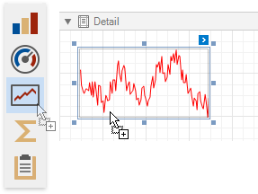
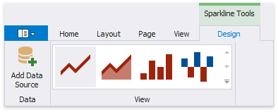
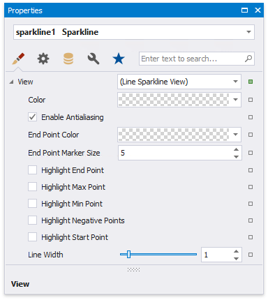

Add Sparklines to a Report
Sparkline Overview
The Sparkline control displays a compact chart that is commonly used to illustrate the data flow for every row in a report.
To add this control to the report, drag the Sparkline item from the Toolbox and drop it onto the report.

Bind the Sparkline to Data
You can connect the sparkline to individual data without accessing a report's data source. Click the control's smart tag, expand the Data Source drop-down list and select the required data source.

The sparkline uses the report's data source if you do not specify the DataSource property.
After that, specify the Data Member property and set the Value Member property to a data field that provides point values for the sparkline.
To create a new data source for a sparkline, open the Toolbar's Sparkline Tools contextual tab and click the Add Data Source button. This invokes the Data Source Wizard that allows you to set up a required data source.
Adjust the Sparkline View
You can select the sparlkline's view type in the Sparkline Tools toolbar tab's View gallery.

Alternatively, you can click the sparkline's smart tag and select the required view type in the View drop-down list.
The sparkline supports the Line, Area, Bar and WinLoss view types.
The View property provides access to options that change the sparkline's appearance.

Each view type has properties that define the extreme values' visibility:
- Highlight Start Point and Highlight End Point;
- Highlight Min Point and Highlight Max Point.
Specific properties differ between view types, such as the Highlight Negative Points setting that is available only for the Bar sparkline.
The following image illustrates a table report containing sparklines that provide maximum and minimum value indicators in their data range: